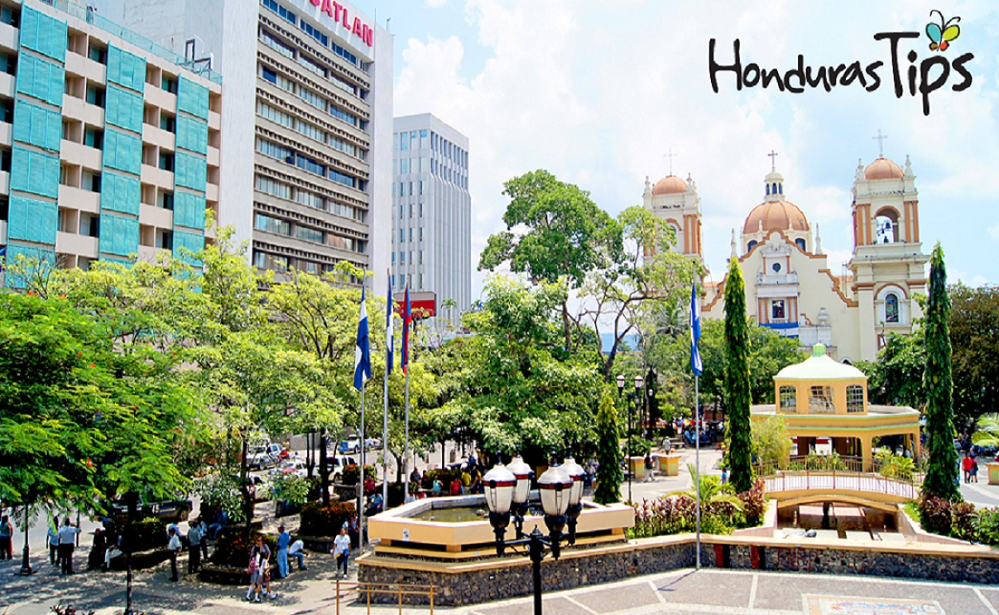

Honduras es el centro turistico del mundo!!



Copán Ruinas
5 de Marzo del 2018
San Pedro sula, Cortés
 Copán es un sitio arqueológico de la antigua civilización maya ubicado en el departamento de Copán al occidente de Honduras, a poca distancia de la frontera con Guatemala. Del siglo v al siglo ix fue la capital de un importante reino del periodo Clásico. La ciudad estaba situada en el extremo sureste de la región cultural Mesoaméricana, en la frontera con la región cultural istmo-colombiana, en una zona habitada por pueblos que no pertenecían a la etnia maya.1 En la actualidad este valle fértil contiene un centro urbano de alrededor de 3000 habitantes, un pequeño aeropuerto y una carretera sinuosa.
Copán es un sitio arqueológico de la antigua civilización maya ubicado en el departamento de Copán al occidente de Honduras, a poca distancia de la frontera con Guatemala. Del siglo v al siglo ix fue la capital de un importante reino del periodo Clásico. La ciudad estaba situada en el extremo sureste de la región cultural Mesoaméricana, en la frontera con la región cultural istmo-colombiana, en una zona habitada por pueblos que no pertenecían a la etnia maya.1 En la actualidad este valle fértil contiene un centro urbano de alrededor de 3000 habitantes, un pequeño aeropuerto y una carretera sinuosa.La ocupación humana del sitio se extiende por más de dos milenios, desde el Preclásico Temprano hasta el Posclásico. La ciudad desarrolló un estilo escultórico distintivo dentro de la tradición de los mayas de las tierras bajas, tal vez para destacar el origen maya de los gobernantes de la ciudad.
account_circle
Roatán
10 de Marzo del 2018
San Pedro sula, Cortés
 Roatán es una isla hondureña situada en las Islas de la Bahía, en el Caribe. Forma parte del enorme Sistema Arrecifal Mesoamericano y es conocida por sus playas, sus sitios de buceo y su vida marina, que incluye tiburones ballena. Al sudoeste se halla la concurrida playa de Bahía Oeste, que tiene un arrecife de coral cerca de la orilla. Los cruceros atracan en la capital (Roatán) y en la cercana bahía Mahogany. Al este hay pequeños asentamientos como el de la cultura garífuna en el pueblo de Punta Gorda.
Roatán es una isla hondureña situada en las Islas de la Bahía, en el Caribe. Forma parte del enorme Sistema Arrecifal Mesoamericano y es conocida por sus playas, sus sitios de buceo y su vida marina, que incluye tiburones ballena. Al sudoeste se halla la concurrida playa de Bahía Oeste, que tiene un arrecife de coral cerca de la orilla. Los cruceros atracan en la capital (Roatán) y en la cercana bahía Mahogany. Al este hay pequeños asentamientos como el de la cultura garífuna en el pueblo de Punta Gorda.para quienes buscan ese perfecto vacaciones tropicales. Hay vuelos directos a Roatán desde Italia, Canadá y los Estados Unidos, y los de vacaciones de este último están felices de encontrar que el idioma principal hablado en Roatán es el inglés. La isla de Roatán es cargada con playas de arena blanca y rodeada de arrecifes de coral, lo que la convierte en un paraíso de buceo y snorkeling.
account_circle
Carlos Arturo Benites
Ingeniero en Sistemas por el Instituto Tecnológico de Tijuana, con Posgrado en Valuación por la Facultad de Economía y Relaciones Internacionales de la UABC, con amplia experiencia en el desarrollo de Softwareasí como avalúos en estas especialidades.
Miembro activo y Ex Presidente del Colegio de Valuadores Estado de Baja California, A.C., Ex secretario de Acción Gremial de la Federación de Colegios de Valuadores, A.C. y miembro activo del Colegio de Ingenieros Civiles de Tijuana, A.C.